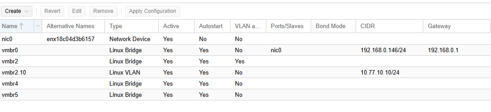
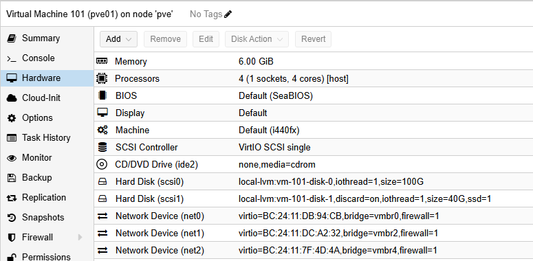
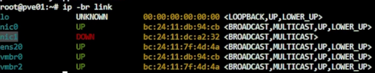
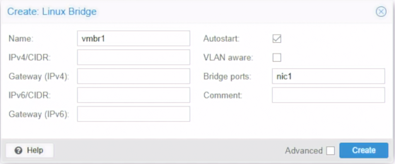
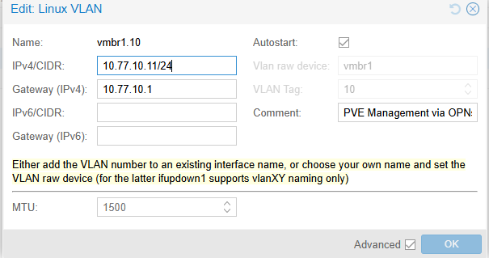
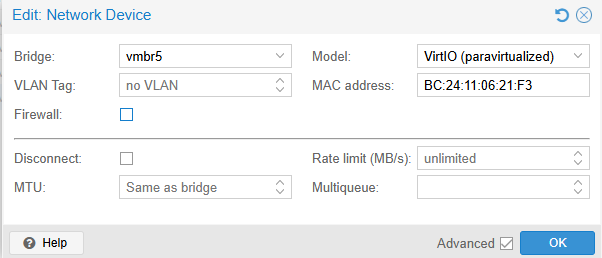
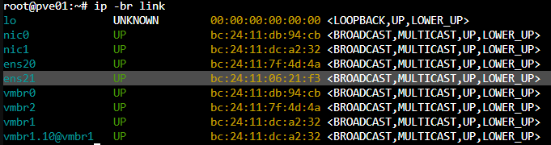
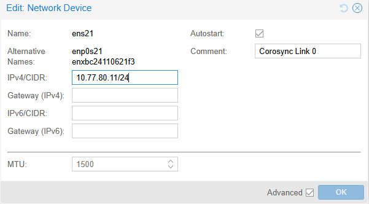
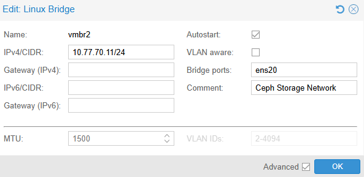
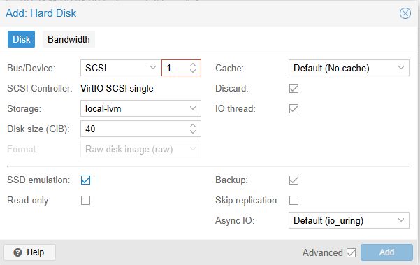

Day 05｜從實體網卡到虛擬機：Linux Bridge、VLAN Trunk 與 PVE 虛擬網路
對應文章：Day 05｜從實體網卡到虛擬機：Linux Bridge、VLAN Trunk 與 PVE 虛擬網路
本日把 Day 03 建立在實體宿主機 pve-l0 上的 vmbr0 與 vmbr2 說清楚，在三台巢狀 PVE 裡建立承接 L2 VM 的 VLAN-aware vmbr1，並完成 Day 07 需要的 Ceph 10.77.70.0/24、Corosync 10.77.80.0/24 以及三顆空白 OSD 磁碟。今天只完成網路與磁碟前置準備，不安裝 Ceph 套件，也不建立 MON、MGR、OSD 或 Pool。注意：pve-l0 的 vmbr2 與 pve01～pve03 裡面的 vmbr2 名稱相同，但位於不同主機，功能也完全不同。
- 所在位置：L0
pve-l0- Bridge：
vmbr2 - Bridge port／上游：無實體 Port
- 用途：交換 Lab 內部 VLAN Trunk 流量
- Bridge：
- 所在位置：L0
pve-l0- Bridge：
vmbr2.10 - Bridge port／上游：VLAN Raw Device
vmbr2 - 用途：L0 的 VLAN 10 管理介面，
10.77.10.10/24，無 Gateway
- Bridge：
- 所在位置：L0
pve-l0- Bridge：
vmbr4 - Bridge port／上游：無實體 Port
- 用途：交換 Nested Ceph Storage 流量
- Bridge：
- 所在位置：L0
pve-l0- Bridge：
vmbr5 - Bridge port／上游：無實體 Port
- 用途：交換 Nested PVE Corosync 流量
- Bridge：
- 所在位置：L1
pve01～pve03- Bridge：
vmbr1 - Bridge port／上游：第二張 VirtIO NIC，通常是
ens19 - 用途：L2 Guest VLAN Trunk
- Bridge：
- 所在位置：L1
pve01～pve03- Bridge：
vmbr1.10 - Bridge port／上游：VLAN Raw Device
vmbr1 - 用途：PVE Management VLAN 10，先設 IP、不設 Gateway
- Bridge：
- 所在位置：L1
pve01～pve03- Bridge：
vmbr2 - Bridge port／上游：第三張 VirtIO NIC，通常是
ens20 - 用途：Ceph Storage Network
- Bridge：
- 所在位置：L1
pve01～pve03- Bridge：第四張 VirtIO NIC
- Bridge port／上游：直接設定
10.77.80.11～13/24 - 用途：Corosync Link 0，不設 Gateway
介面名稱只是辨識結果，實際操作必須用 MAC Address 對照，不能只看 nic1、ens20 等名稱猜測。同一張 NIC 只能成為一個 Linux Bridge 的 Port。Corosync 第四張 NIC 不加入 L1 Bridge，直接設定固定 IP。本次 pve01 的實際介面名稱是 ens21。
0. 防止鎖死自己的操作順序
錯誤的配置是有機會讓自己進不去管理畫面的，我自己剛學時大概鎖死自己 3 次
- 修改前保持 L0 與 L1 Console 開啟。
- 一次只改一個 Bridge。
- 不移除
vmbr0的管理位址與實體 Port。 - Apply 後先驗證 Web UI，再改下一個節點。
1. 先確認 L0 pve-l0 網路
- 登入
pve-l0→System→Network。 - 確認
vmbr0有實際管理位址與實體 Bridge Port。 - 確認這裡看到的是
pve-l0的vmbr2：沒有 IP、沒有 Gateway、VLAN aware已勾選。 - 按
Create→Linux Bridge，建立或確認pve-l0的vmbr4：Bridge ports、IPv4/CIDR、Gateway 全部留白，不勾 VLAN aware，Comment 填Nested Ceph Storage Network。 - 再按
Create→Linux Bridge，建立或確認pve-l0的vmbr5：Bridge ports、IPv4/CIDR、Gateway 全部留白，不勾 VLAN aware，Comment 填Nested PVE Corosync Network。 - 按
Create→Linux VLAN，建立或確認vmbr2.10。 - Name 填
vmbr2.10。VLAN raw device 選vmbr2。若介面依名稱自動辨識 VLAN Tag，確認結果為10。 - IPv4/CIDR 填
10.77.10.10/24，IPv4 Gateway 留白，IPv6 不設定，勾選Autostart，Comment 填L0 VLAN 10 management path。 - 按
Create→Apply Configuration。這個子介面只預先讓 L0 加入 VLAN 10，不會取代vmbr0的 Default Gateway。 - 確認
vmbr0的管理位址與實體 Bridge Port 沒有被修改。
圖（一）pve-l0 的 vmbr0、內部 Trunk、Ceph 與 Corosync Bridge。
- Shell 執行：
ip -br link
ip -4 -br address
bridge link
bridge vlan show
cat /etc/network/interfaces
這步驟只是再次確認網卡狀態也練習一下 CLI 命令，/etc/network/interfaces 就是 PVE 實際放置網卡配置的地方。
2. 為三台巢狀 PVE 補上 Ceph 網卡
先在 L0 依序檢查 VM 101、102、103 的 Hardware。如果已經有 Bridge 指向 vmbr4 的 net2，只記錄 MAC Address，缺少時才執行：
- 選 VM →
Hardware→Add→Network Device。 - Bridge 選
vmbr4。 - Model 選
VirtIO (paravirtualized)。 - VLAN Tag 留白，Firewall 取消勾選，Disconnect 不勾選。
- 按
Add，確認新增的是net2，並記下它的 MAC Address。 - 三台完成後再逐台啟動。
回到各 VM 的 Hardware，確認三張既有網卡角色：
- net0：Bridge
vmbr0，VLAN Tag 留白，Day 03～15 負責 PVE Bootstrap、Web UI 與套件下載。Day 15 移除 Gateway 後只作同網段救援。 - net1：Bridge 選 L0 的
vmbr2，VLAN Tag 留白，承載 L2 Guest VLAN Trunk。進入 Nested PVE 後通常會顯示為ens19。 - net2：Bridge 選 L0 的
vmbr4，VLAN Tag 留白，承載 Ceph Storage Network。進入 Nested PVE 後通常會顯示為ens20。
Trunk 網卡本身不要固定成 VLAN 20、30、40 或 50，否則只能承載其中一個 VLAN。Ceph 的 net2 也不填 VLAN Tag，因為它已經透過獨立的 L0 vmbr4 與其他網路隔離。

圖（二）Nested PVE 的網卡與磁碟配置。圖中的 6 GiB Memory 與 100 GiB System Disk 是早期畫面，正式設定以 Day 03 的 12 GiB 與 80 GiB 為準。

圖（三）用 MAC Address 對照 Nested PVE 內的 VirtIO 介面名稱。
3. 在 pve01 建立 L2 Trunk Bridge
- 登入
pve01。 - 選
pve01→System→Network。 - 先從介面清單辨認第二張 VirtIO NIC，也就是在 L0 VM Hardware 中接到
vmbr2的net1。不要只憑介面名稱猜測。一般會是nic1，但應以 MAC Address 為準。 - 按
Create→Linux Bridge。 - Name 填
vmbr1。 - Bridge ports 選第二張、連到 L0
vmbr2的 NIC。 - IPv4、IPv6 都選不配置，Gateway 留白。
- 勾選
VLAN aware，Comment 填L2 guest VLAN trunk。 - 按
Create→Apply Configuration。

圖（四）建立 vmbr1。圖中尚未勾選 VLAN aware，送出前必須勾選。
- Console 仍保持開啟，確認管理用
vmbr0沒有被修改。
在 pve02、pve03 重複同一流程。
3.1 預先建立 PVE Management VLAN 10 子介面
vmbr1 建立完成後，在三台 L1 PVE 先建立 vmbr1.10，替後續把管理入口切換到 OPNsense 鋪路。這一天只設定 IP，不修改現有 Default Gateway。
先在 pve01 操作：
- 選
pve01→System→Network。 - 按
Create→Linux VLAN。 - Name 填
vmbr1.10。VLAN raw device 選vmbr1。若畫面依名稱自動辨識 VLAN Tag，確認結果為10。 - IPv4/CIDR 填
10.77.10.11/24。 - IPv4 Gateway 留白，IPv6 不設定，勾選
Autostart。 - Comment 填
PVE Management VLAN 10。 - 按
Create→Apply Configuration。 - 確認
vmbr0原有的192.168.0.x位址與 Default Gateway 都沒有被修改。

圖（五）此畫面拍攝於後續 Gateway 已切換的狀態；Day 05 建立時 Gateway 必須留白。
在另外兩台重複相同步驟，只更換 IPv4/CIDR：
- pve01：
10.77.10.11/24 - pve02：
10.77.10.12/24 - pve03：
10.77.10.13/24
三台的 vmbr1.10 都不填 Gateway。此時 10.77.10.1 尚未由 OPNsense 提供完整管理路徑，因此不要移除 vmbr0 的現有 Gateway。
4. 建立 Corosync 專用網路
4.1 在 L0 為三台 Nested PVE 加入第四張網卡
依序關閉 VM 101、102、103，確認狀態顯示
stopped。在 L0 左側選 VM 101
pve01→Hardware。按
Add→Network Device。依照下列方式填寫：
- Bridge：
vmbr5 - Model：
VirtIO (paravirtualized) - VLAN Tag：留白
- MAC address：使用自動產生值
- Firewall：取消勾選
- Disconnect：不勾選
- Bridge：
按
Add。回到 Hardware 後應看到新增的Network Device (net3)，內容包含bridge=vmbr5。選取
net3→Edit，把畫面中的 MAC Address 記錄下來。後面要靠這個位址辨認 Nested PVE 裡的新介面。

圖（六）新增連到 vmbr5 的 Corosync 網卡。
- 在 VM 102
pve02、VM 103pve03重複相同步驟。三台必須使用各自自動產生的 MAC Address，不可複製成相同值。 - 三台都完成後再逐台啟動。
4.2 在 Nested PVE Web UI 找出第四張 NIC
以下先以 pve01 為例：
使用原本路由器配發並固定的
192.168.0.x管理位址登入 pve01 Web UI。左側選節點
pve01。進入
System→Network。清單中會多出一張尚未加入任何 Linux Bridge、也沒有 IPv4/CIDR 的 Network Device。介面名稱可能是
nic2、ens21或其他值，不可只靠名稱判斷。開啟同一節點的
Shell執行，確認 MAC 位置對應的網卡：ip -br link

圖（七）用 MAC Address 找出本次 pve01 的第四張網卡 ens21。
- 將輸出的 MAC Address 與 L0 VM 101
Hardware→net3記錄的 MAC 對照，找出真正連到vmbr5的第四張 NIC。
4.3 使用 GUI 設定 Corosync IPv4
在 pve01 的 System → Network：
選取剛才用 MAC Address 確認的第四張 Network Device。
按上方
Edit，開啟Edit: Linux Network Device。依照下列方式填寫：
- IPv4/CIDR：
10.77.80.11/24 - IPv4 Gateway：留白。若畫面沒有這個欄位，不另外建立 Gateway
- IPv6/CIDR：留白
- IPv6 Gateway：留白
- Autostart：勾選
- MTU：保持預設，不自行填入 Jumbo Frame
- Comment：
Corosync Link 0
- IPv4/CIDR：
圖（八）替 ens21 設定 Corosync Link 0 位址並啟用 Autostart。
Autostart 是必要設定。這張 Corosync NIC 沒有加入 Linux Bridge。如果未勾選 Autostart，PVE 可能只保存 IPv4 設定，開機時卻不會自動啟用介面，重新啟動後也不會出現 10.77.80.x。勾選後，PVE 會在 /etc/network/interfaces 為該介面建立對應的 auto 設定。
按
OK儲存。Network 畫面上方
Apply Configuration，按下並確認套用。套用後回到 Network 清單，確認該 Network Device 顯示
10.77.80.11/24，而vmbr0的192.168.0.x管理位址仍然存在。開啟 Shell 執行
ip -4 -br address。如果第四張 NIC 仍顯示DOWN或沒有10.77.80.11/24，先再次確認 GUI 的 Autostart 已勾選並且 Pending Changes 已套用。若設定已保存但介面仍未啟用，可針對剛才以 MAC Address 確認的實際介面執行。本次 pve01 的實際介面名稱是
ens21：ifup ens21 ip -4 -br address
pve02、pve03 仍要先以 MAC Address 確認名稱。
接著在另外兩台重複完全相同的 GUI 流程，只更換 IPv4/CIDR：
- 節點：pve01
- IPv4/CIDR：
10.77.80.11/24 - Gateway：留白
- Comment：
Corosync Link 0
- IPv4/CIDR：
- 節點：pve02
- IPv4/CIDR：
10.77.80.12/24 - Gateway：留白
- Comment：
Corosync Link 0
- IPv4/CIDR：
- 節點：pve03
- IPv4/CIDR：
10.77.80.13/24 - Gateway：留白
- Comment：
Corosync Link 0
- IPv4/CIDR：
這三個位址直接設定在第四張 VirtIO NIC 上。
三台都設定完成後，在建立 Cluster 前依序重新啟動 pve01、pve02、pve03，每次只重新啟動一台。重新登入後再次確認 10.77.80.11～13/24 仍存在。這一步用來證明 Autostart 已生效，而不是只靠手動 ip link set ... up 暫時啟用。
4.4 確認沒有設定錯 Gateway
在三台 Nested PVE 各自執行：
ip -4 -br address
ip route
檢查重點：
- 第四張 NIC 有正確的
10.77.80.11～13/24。 - 第四張 NIC 在重新開機後仍為
UP，證明 Autostart 已生效。 10.77.80.0/24是直接連線路由。- Default Route 仍指向原本路由器管理網路。
- 不可出現
default via 10.77.80.x。
最後從每台交叉 Ping 另外兩台。不要只 Ping 自己。這個網路不經現有路由器、OPNsense 或 Default Gateway。
ping -c 3 10.77.80.11
ping -c 3 10.77.80.12
ping -c 3 10.77.80.13
如果都正常代表配置成功。
5. 建立 Ceph Storage Network
先用 L0 記錄的 net2 MAC Address，找出三台巢狀 PVE 內真正連到 L0 vmbr4 的第三張 VirtIO NIC。通常會是 ens20，但仍以 MAC Address 為準。
在 pve01 操作：
- 選
pve01→System→Network。 - 按
Create→Linux Bridge。 - Name 填
vmbr2。 - Bridge ports 選剛才用 MAC Address 確認、連到 L0
vmbr4的第三張 NIC。 - IPv4/CIDR 填
10.77.70.11/24。 - Gateway 留白，IPv6 不設定。
- 不勾
VLAN aware，勾選Autostart。 - Comment 填
Ceph Storage Network。

圖（九）建立使用 ens20 的 Ceph Storage Network vmbr2。
- 按
Create→Apply Configuration，並確認管理用vmbr0沒有被修改。
在另外兩台重複相同流程，只更換 IPv4/CIDR：
- 節點：pve01
- vmbr2 IPv4/CIDR：
10.77.70.11/24 - Gateway：留白
- vmbr2 IPv4/CIDR：
- 節點：pve02
- vmbr2 IPv4/CIDR：
10.77.70.12/24 - Gateway：留白
- vmbr2 IPv4/CIDR：
- 節點：pve03
- vmbr2 IPv4/CIDR：
10.77.70.13/24 - Gateway：留白
- vmbr2 IPv4/CIDR：
三台都完成後，在各節點執行：
ip -4 -br address
ip route
檢查 10.77.70.0/24 是直接連線路由，Default Route 仍指向原本的管理網路，不可出現 default via 10.77.70.x。最後從每台交叉 Ping 另外兩台：
ping -c 3 10.77.70.11
ping -c 3 10.77.70.12
ping -c 3 10.77.70.13
這個網段沒有 Gateway，也不經 OPNsense，專門承載 Ceph Client、MON、OSD 與 OSD 複寫的 Lab 儲存流量。今天只是把網路準備好，尚未初始化 Ceph。
6. 為每個 Ceph 節點增加空白 OSD 磁碟
回到 L0，對 VM 101、102、103 各操作一次：
- 正常關閉該巢狀 PVE，確認狀態為
stopped。 - 選 VM →
Hardware→Add→Hard Disk。 - Bus/Device 選尚未使用的
SCSI編號。 - Storage 選
local-lvm，Disk size 填40 GiB。 - Cache 使用
No cache，勾選Discard與IO thread。 - 取消勾選
Backup。這顆磁碟之後會成為 Ceph OSD，不應被當成一般 VM 磁碟納入 vzdump 備份。 - 只有 L0 實體底層確實是 SSD／NVMe 時才勾
SSD emulation（需要先勾選Advanced）。 - 按
Add，再啟動該節點。

圖（十）新增 40 GiB OSD 磁碟；圖中 Backup 仍為勾選狀態，送出前必須取消。
三台開機後各自執行：
lsblk -o NAME,SIZE,TYPE,FSTYPE,MOUNTPOINTS,MODEL
每台應看到一顆約 40 GiB、沒有 FSTYPE 與 Mountpoint 的額外磁碟。整顆空白磁碟留到 Day 07 建立 Ceph OSD。
7. 說明後續封包路徑（本步驟不操作）
Day 05 到這裡已完成 Bridge、Corosync、Ceph 網路與空白磁碟的前置準備，但不建立一般服務 VM。之後一般 VM 的 NIC 才會接在 L1 vmbr1，並在 VM Hardware 的 Network Device 填 VLAN Tag：
- 類型：Service
- VLAN Tag：20
- 範例 VM：proxy01、proxy02、app01、app02
- 類型：Database
- VLAN Tag：30
- 範例 VM：pg01、pg02、pg03
- 類型：Backup
- VLAN Tag：40
- 範例 VM：backup01
- 類型：Bastion DMZ
- VLAN Tag：50
- 範例 VM：jump01
看不懂沒關係，後續防火牆章節會再次解釋。